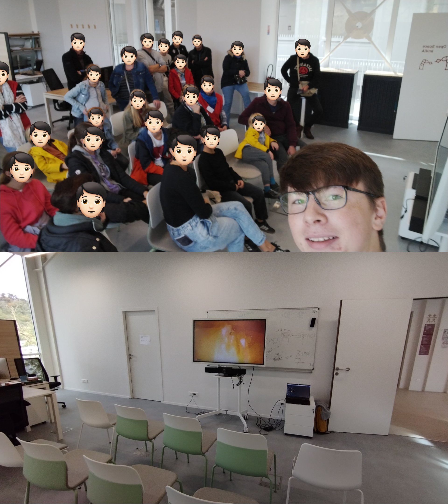

Etudiant en Ingénierie Robotique à Polytech Dijon
Notre Civilisation est en V1 depuis bien trop longtemps
Projet d'étude s'étallent sur deux ans et demi, dans l'objectif de rétro-concevoir la commande du propulseur de fusée Super Heavy pour l'attraper en plein vol.
Et pour me préparer aux Olympiades FANUC, j'utilise un bras robotisé FANUC pour recréer ma simulation dans une cellule robotisée munie de capteurs et d'actuateur sur les différentes maqettes.
Pendant ce stage, j'ai eu la chance de présenter mon projet pilote à des représentants du MIT France et de Safran Tech, ai implémenter une interface utilisateur et ai commencé les études aérodynamiques pour ce même projet.
J'ai aussi implémenté mon propre algorithme de trajectoire dynamique sur un controlleur FANUC R-30iA Mate (librairie open-source qui sera bientôt partagée).
Dans la volonté d'aider mes camarades en option Informatique au Lycée, j'ai mis en place des séances d'une heure toutes les deux semaines pour réexpliquer les notions de cours, aider aux devoirs, et présenter l'utilité d'outils comme Git ou des API, essentielles pour des gros projets de programmation.
Mais le club a dû s'arrêter par manque de monde.
Stage d'observation dans un supermarché. J'ai passé la serpière, mit en rayon, aligné les produits "facing", ai vérifier les étiquettes prix, et me suis occupé d'une dizaine de personnes en caisse.
Délégué pendant deux années, j'étudie l'électronique, l'automatique, la programmation C++, ainsi que l'algèbre et l'optimization mathématique.
TOEIC : 970/900, passé en Février 2025
Maths, Physiques et Informatiques Théoriques, avec de l'Anglais et de la Philosophie. Plusieurs évaluations par semaine.
Mention Bien, options Mathématiques, Informatique, et Science de l'Ingénieur.
Au CVB (Creusot Volley Ball), je joue au poste de central dans une des deux équipes régionnales.
Je joue environ 3 fois par semaines, sans compter les compétitions.
Transformation sur 8 mois, 6 jours par semaine tôt le matin avant que la salle de sport soit envahie. Je me suis échapé d'un surpoids certain.
Pendant trois ans, j'ai fait du Taekwondo (Art Martial Coréen) dont deux ans avec Maître VIDAL Stephane, champion Européen sénior et multiple champion de France.
J'utilise le C++ pour mes projets les plus importants, communication, système embarqué et interfaces utilisateur.
Actuellement, je dois travailler avec la librairie SFML.
J'utilise régulièrement HTML/CSS/JS, pour des interfaces intuitives, des graphiques/statistiques, visualisation 3D, et la page sur votre écran.
Bénévole pour animer plusieurs ateliers dans une foire scientifique pour jeunes et adultes, de simples robots pour enfants, casques VR, et le premier retour du Super Heavy de SpaceX, en direct, ainsi que de présenter mon projet pilote à une audience variée.
Student in Robotics Engineering at Polytech Dijon
Civilization has been in V1 for too long
2.5 years long engineering solo project : reverse-engineer the Super Heavy Booster commands to allow it to be caught in a simulated environment.
And to prepare myself for France FANUC Young Talent competition, I'm using a FANUC robotic arm to recreate the simulated environment in a real robotic cell, with sensorized & actuated mockups.
During this month, I presented my flagship project to MIT France and Safran Tech representative, implemented GUIs and started Computational Fluid Dynamics for aerodynamics. I also implemented my own version of Remote Dynamic Pathing on a FANUC R-30iA Mate controller (open-source library soon to be published).
In a try to help my Computer Sciences classmates in high-school, I set up with the help of the high-school administration, a 1-hour period every 2 weeks to reexplain classes materials, help with homework, as well as going futher exploring what tools developers need to use for real projects like Git or APIs.
It was not really sucessful sadly...
A week required to pass my academic year, at a supermarket. I helped clean the floor, shelve products, align the products on the shelves and check item pricing.
Delegate for 2 years, I study Mechatronics, Automation, C++ Programming, Algebra & Optimization
TOEIC : 970/900 on Feb. 2025
Fundamental Maths and Physics, with Computer Science, English and Philosophy. Multiple exams per week.
General track, with Maths and Computer Science options. With honors
At CVB (Creusot Volley Ball), I'm a middle blocker in one of our Regional teams.
I'm playing about 3 times 2 hours per week, excluding competitions on the weekend.
Did a 8 months transformation, 6 days a week early in the morning when all machine were available. Made me feel much better as overweight wasn't far.
For 3 years, I did Taekwondo (a Korean martial art) including 2 years with sabom VIDAL Stephane, European champion and multiple France champion.
I use C++ for the most important projects, with socket communications, multithreading and GUIs with ImGui.
In current projects, I will need to work with the SFML framework.
I regularly use HTML/CSS/JS for study projects, from advanced interfaces with graphs and statistics, 3d environments, and this website.
Volunteer to animate multiple stands at a science forum, from simple funny robots for kids, VR experiences, and SpaceX's Super Heavy first catch in live with a respectable crowd, as well as presenting my project to everyday people.